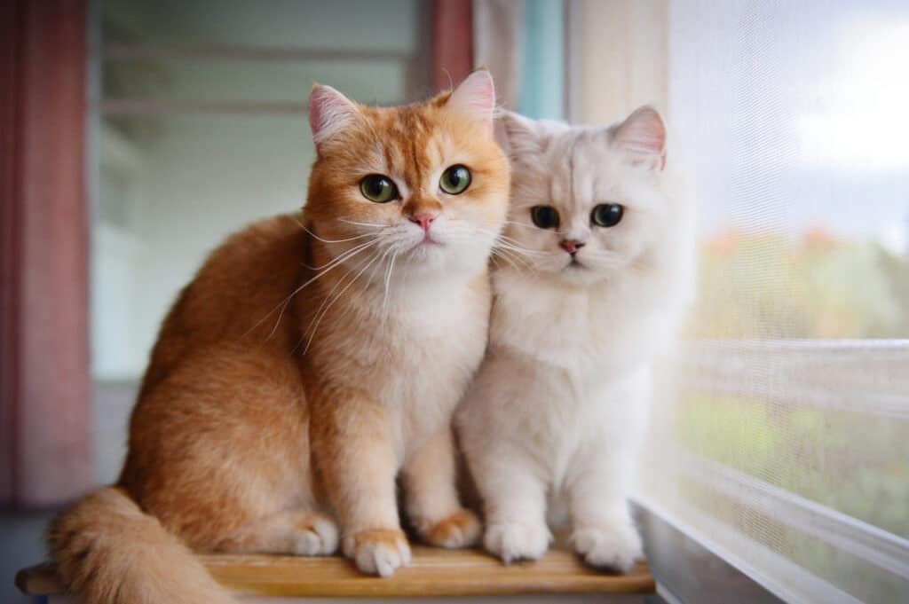

นิสัยแมวแต่ละสายพันธุ์ / ความแตกต่างของแมวแต่ละสายพันธุ์ ธรรมชาติและอุปนิสัยที่แตกต่างกันของแมวแต่ละสายพันธุ์ยอดนิยม ช่วยให้คุณเลือกเพื่อนรู้ใจที่เข้ากับไลฟ์สไตล์ได้ง่ายขึ้นเปอร์เซีย (Persian): สุภาพ นิ่ง รักสงบ ชอบนอนมากกว่าวิ่งเล่น เสียงร้องเบา และรักความสบาย เหมาะกับบ้านที่ชอบความเงียบสงบ
สก็อตติช พับด์ (Scottish Fold): ขี้อ้อน ฉลาด ปรับตัวเก่ง มีเอกลักษณ์คือชอบนอนหงายหรือนั่งท่าแปลกๆ (พับขา) ติดเจ้าของมาก
บริติช ช็อตแร์ (British Shorthair): นิ่งๆ สุขุม รักอิสระแต่ก็เป็นมิตร ไม่ค่อยวุ่นวาย เหมาะกับคนที่มีเวลาให้พอประมาณแต่ไม่ต้องดูแลตลอดเวลา
มนคูน (Maine Coon): ยักษ์ใหญ่ใจดี เข้ากับเด็กและสัตว์อื่นได้ดี ขี้เล่น อยากรู้อยากเห็น ชอบน้ำ และมีนิสัยคล้ายสุนัขบางส่วน
วิเชียรมาศ (Siamese): ฉลาด ช่างพูด ส่งเสียงเก่ง รักเจ้าของแบบสุดโต่ง ขี้อ้อน และต้องการความสนใจสูง
เบงกอล (Bengal): พลังงานเหลือล้น รักความตื่นเต้น ชอบปีนป่าย วิ่งไล่ และต้องการพื้นที่หรือของเล่นให้ปลดปล่อยพลังเยอะ
สฟิงซ์(Sphynx): ขี้อ้อน ติดคนมากเป็นพิเศษเพราะต้องการความอบอุ่นจากร่างกายคน (ไม่มีขน) ฉลาดและตลก